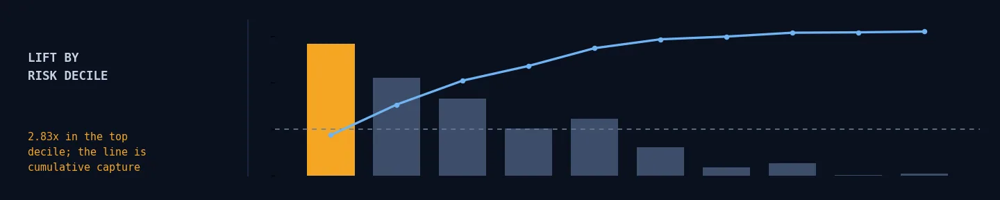
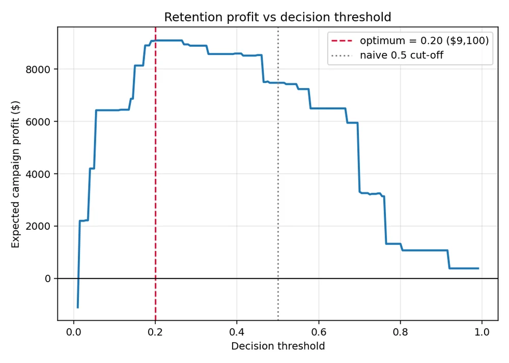

Customer Churn MLOps Platform
A threshold chosen from retention economics rather than 0.5 was worth +19.7% campaign profit — on the same model.
An end-to-end system for telco churn: cross-validated model selection, isotonic calibration on a held-out split, MLflow tracking with a working model registry, a validated FastAPI service, a Docker image, and drift monitoring built from first principles.
- ROC AUC0.844
- PR AUC0.632
- Profit uplift+$1,470
Logistic regression beat XGBoost in cross-validation, so that is what ships. The drift detector needed a Bonferroni correction — without it, 19 features produced roughly one false alarm on every clean window.
Python · scikit-learn · XGBoost · MLflow · FastAPI · Docker · GitHub Actions